Change analysis for Paraguay for PRIMAP-hist v2.6.1_final compared to
v2.6_final
Overview over
emissions by sector and gas
The following figures show the aggregate national total emissions
excluding LULUCF AR6GWP100 for the country reported priority scenario.
The dotted linesshow the v2.6_final data.
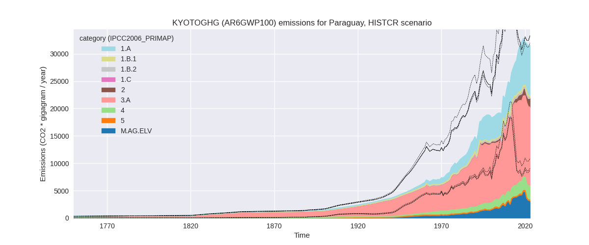
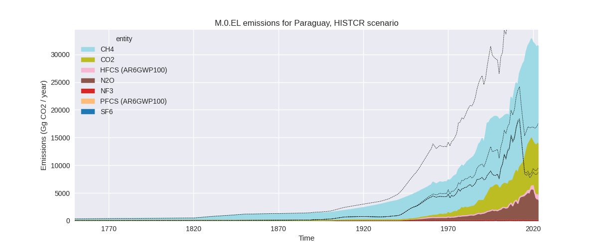
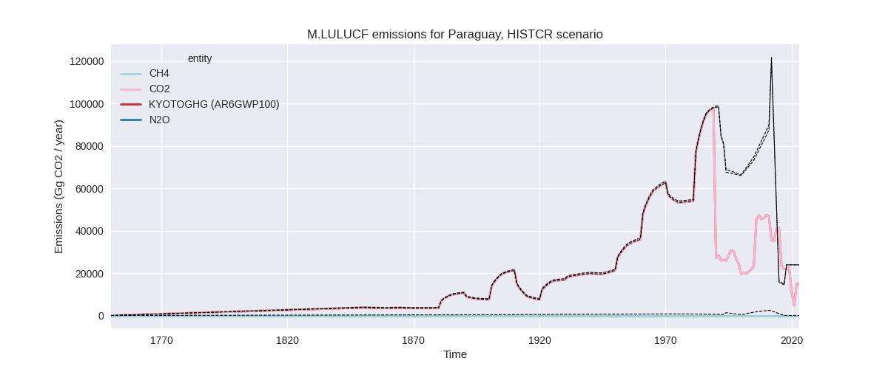
The following figures show the aggregate national total emissions
excluding LULUCF AR6GWP100 for the third party priority scenario. The
dotted linesshow the v2.6_final data.
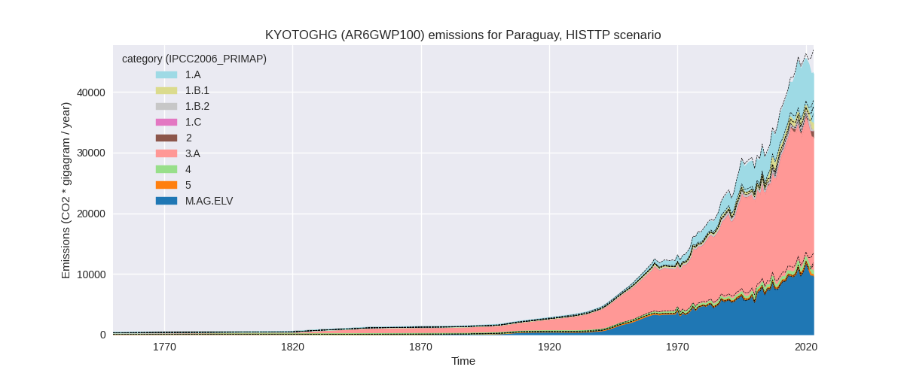
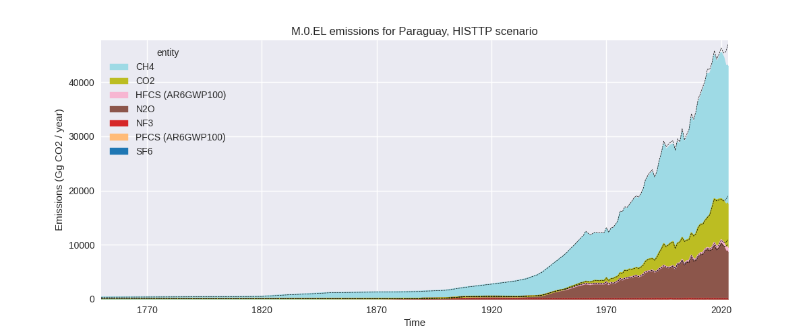
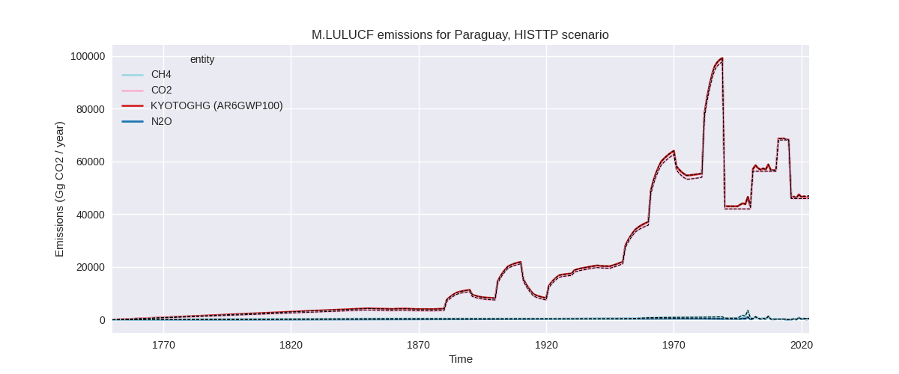
Overview over changes
In the country reported priority scenario we have the following
changes for aggregate Kyoto GHG and national total emissions excluding
LULUCF (M.0.EL):
- Emissions in 2023 have changed by -23.7%% (-9826.21 Gg CO2 / year)
- Emissions in 1990-2023 have changed by -36.3%% (-13155.94 Gg CO2 / year)
In the third party priority scenario we have the following changes
for aggregate Kyoto GHG and national total emissions excluding LULUCF
(M.0.EL):
- Emissions in 2023 have changed by -8.2%% (-3863.43 Gg CO2 / year)
- Emissions in 1990-2023 have changed by -2.5%% (-861.99 Gg CO2 / year)
Most
important changes per scenario and time frame
In the country reported priority scenario the
following sector-gas combinations have the highest absolute impact on
national total KyotoGHG (AR6GWP100) emissions in 2023
(top 5):
- 1: 3.A, CH4 with -7263.03 Gg CO2 / year (-34.5%)
- 2: M.AG.ELV, N2O with -5381.93 Gg CO2 / year (-68.1%)
- 3: 1.A, CO2 with 1148.08 Gg CO2 / year (15.6%)
- 4: 4, CH4 with 989.81 Gg CO2 / year (61.6%)
- 5: 3.A, N2O with 521.28 Gg CO2 / year (1373.8%)
In the country reported priority scenario the
following sector-gas combinations have the highest absolute impact on
national total KyotoGHG (AR6GWP100) emissions in
1990-2023 (top 5):
- 1: M.AG.ELV, N2O with -7662.46 Gg CO2 / year (-77.9%)
- 2: 3.A, CH4 with -6037.49 Gg CO2 / year (-33.5%)
- 3: 1.B.1, CH4 with 394.58 Gg CO2 / year (inf%)
- 4: 4, CH4 with 347.09 Gg CO2 / year (27.3%)
- 5: M.AG.ELV, CH4 with -304.62 Gg CO2 / year (-70.8%)
In the third party priority scenario the following
sector-gas combinations have the highest absolute impact on national
total KyotoGHG (AR6GWP100) emissions in 2023 (top
5):
- 1: M.AG.ELV, N2O with -1267.83 Gg CO2 / year (-13.6%)
- 2: 3.A, CH4 with -1016.74 Gg CO2 / year (-4.5%)
- 3: 4, CH4 with -930.19 Gg CO2 / year (-61.4%)
- 4: M.AG.ELV, CH4 with -674.66 Gg CO2 / year (-31.3%)
- 5: 1.B.1, CH4 with 123.55 Gg CO2 / year (12.0%)
In the third party priority scenario the following
sector-gas combinations have the highest absolute impact on national
total KyotoGHG (AR6GWP100) emissions in 1990-2023 (top
5):
- 1: 4, CH4 with -742.45 Gg CO2 / year (-64.0%)
- 2: M.AG.ELV, N2O with -63.18 Gg CO2 / year (-0.9%)
- 3: 3.A, CH4 with -47.14 Gg CO2 / year (-0.3%)
- 4: M.AG.ELV, CH4 with -31.34 Gg CO2 / year (-2.7%)
- 5: 2, SF6 with 30.99 Gg CO2 / year (inf%)
Notes on data changes
Here we list notes explaining important emissions changes for the
country.
- CRT data from BTR1 has been included covering 1990-2021. It replaces
and extends data from BUR3 and DI.
- The CRT data is much lower for the agricultural sectors (except for
N2O in 3.A)
- Energy CO2 emissions are higher in 2023 because the post-2020 growth
rates in the CRT data are higher than in the EI data used before.
- Changes in the TP scenario are due to the updated FAO and EDGAR
data.
Changes by sector and gas
For each scenario and time frame the changes are displayed for all
individual sectors and all individual gases. In the sector plot we use
aggregate Kyoto GHGs in AR6GWP100. In the gas plot we usenational total
emissions without LULUCF.
country reported scenario
2023
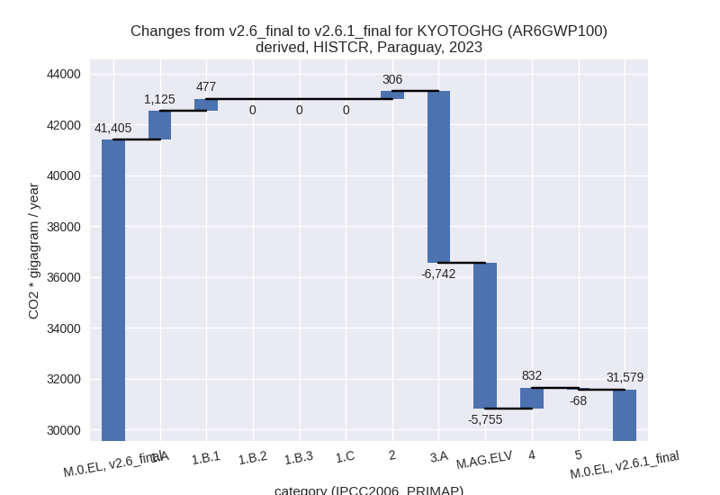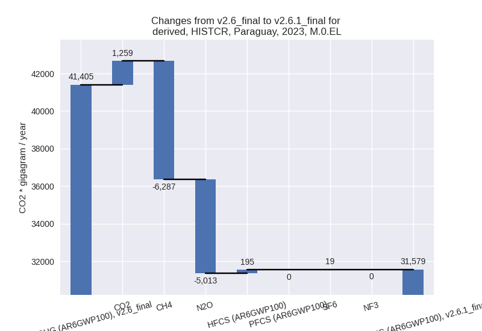
1990-2023
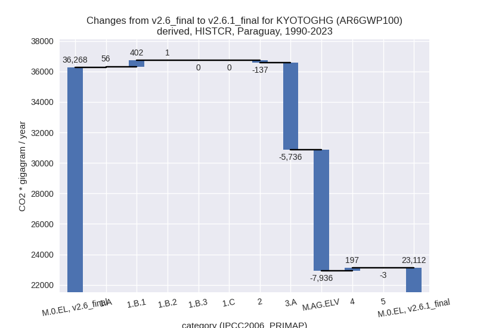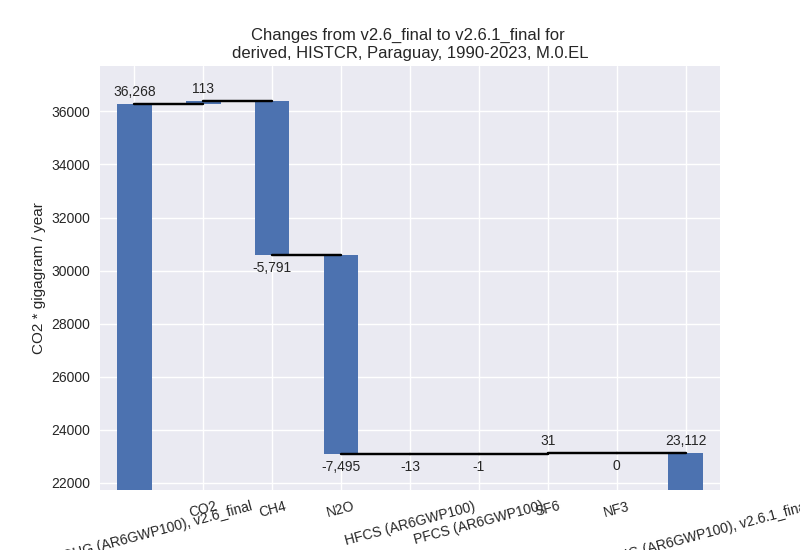
third party scenario
2023
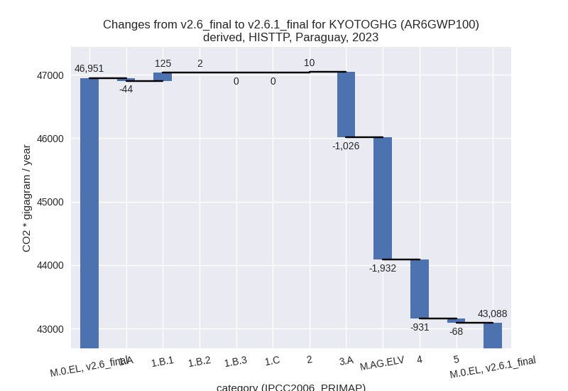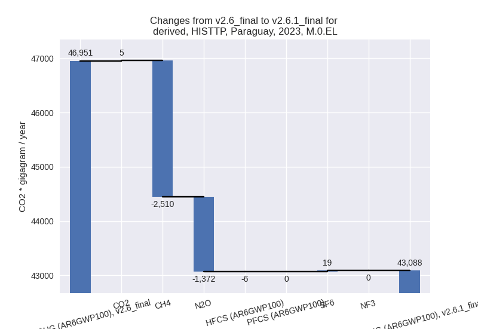
1990-2023
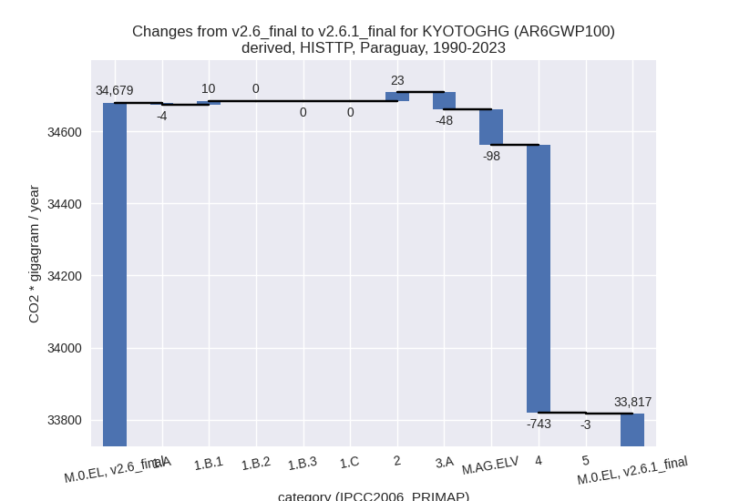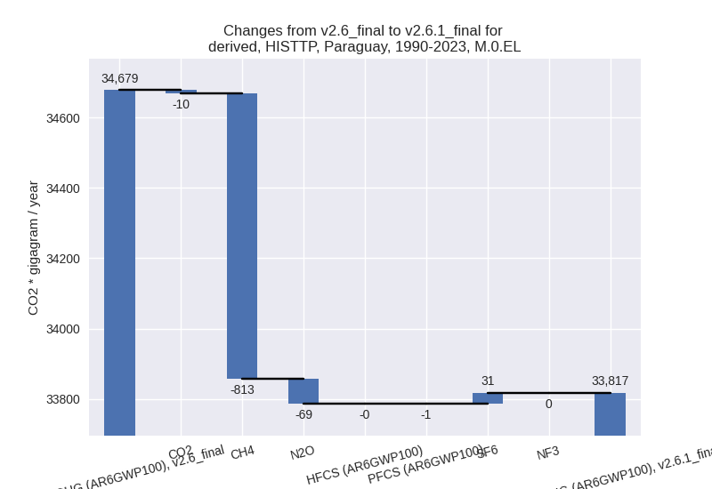
Detailed changes for the
scenarios:
country reported scenario
(HISTCR):
Most important changes
per time frame
For 2023 the following sector-gas combinations have
the highest absolute impact on national total KyotoGHG (AR6GWP100)
emissions in 2023 (top 5):
- 1: 3.A, CH4 with -7263.03 Gg CO2 / year (-34.5%)
- 2: M.AG.ELV, N2O with -5381.93 Gg CO2 / year (-68.1%)
- 3: 1.A, CO2 with 1148.08 Gg CO2 / year (15.6%)
- 4: 4, CH4 with 989.81 Gg CO2 / year (61.6%)
- 5: 3.A, N2O with 521.28 Gg CO2 / year (1373.8%)
For 1990-2023 the following sector-gas combinations
have the highest absolute impact on national total KyotoGHG (AR6GWP100)
emissions in 1990-2023 (top 5):
- 1: M.AG.ELV, N2O with -7662.46 Gg CO2 / year (-77.9%)
- 2: 3.A, CH4 with -6037.49 Gg CO2 / year (-33.5%)
- 3: 1.B.1, CH4 with 394.58 Gg CO2 / year (inf%)
- 4: 4, CH4 with 347.09 Gg CO2 / year (27.3%)
- 5: M.AG.ELV, CH4 with -304.62 Gg CO2 / year (-70.8%)
Changes in the main sectors for aggregate KyotoGHG (AR6GWP100)
are
- 1: Total sectoral emissions in 2022 are 9458.95 Gg
CO2 / year which is 30.2% of M.0.EL emissions. 2023 Emissions have
changed by 19.8% (1601.63 Gg CO2 /
year). 1990-2023 Emissions have changed by 8.6% (459.49 Gg CO2 / year). For 2023 the
changes per gas
are:
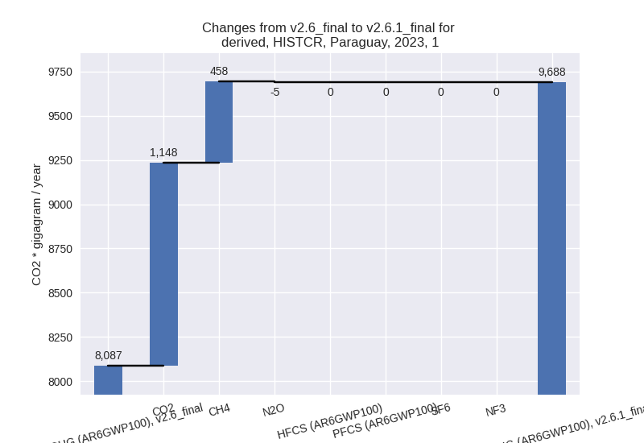
For 1990-2023 the changes per gas
are:
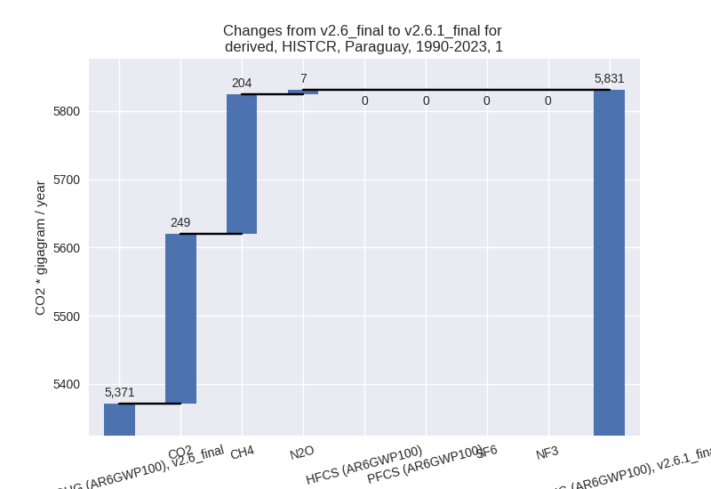
The changes come from the following subsectors:
- 1.A: Total sectoral emissions in 2022 are 8982.07
Gg CO2 / year which is 95.0% of category 1 emissions. 2023 Emissions
have changed by 13.9% (1124.75 Gg
CO2 / year). 1990-2023 Emissions have changed by 1.1% (56.47 Gg CO2 / year). For 2023 the
changes per gas
are:
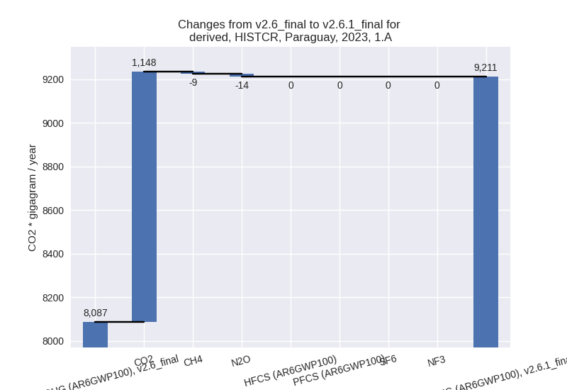
There is no subsector information available in PRIMAP-hist.
- 1.B.1: Total sectoral emissions in 2022 are 476.88
Gg CO2 / year which is 5.0% of category 1 emissions. 2023 Emissions have
changed by inf% (476.88 Gg CO2 /
year). 1990-2023 Emissions have changed by inf% (402.25 Gg CO2 / year). For 2023 the
changes per gas
are:
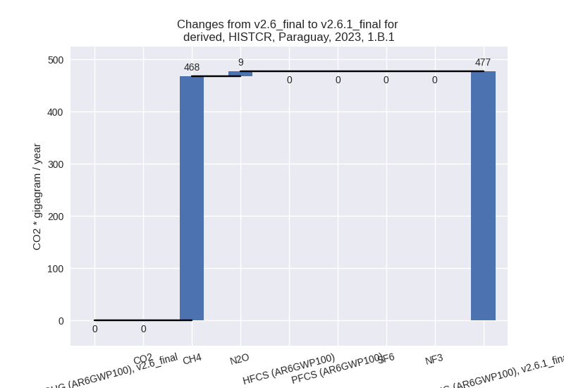
For 1990-2023 the changes per gas
are:
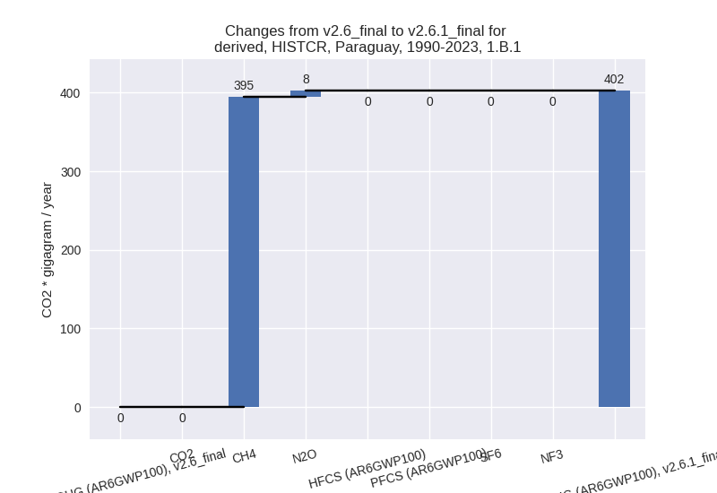
There is no subsector information available in PRIMAP-hist.
- 1.B.2: Total sectoral emissions in 2022 are 0.00 Gg
CO2 / year which is 0.0% of category 1 emissions. 2023 Emissions have
changed by 0.0% (0.00 Gg CO2 /
year). 1990-2023 Emissions have changed by inf% (0.76 Gg CO2 / year). For 1990-2023
the changes per gas
are:
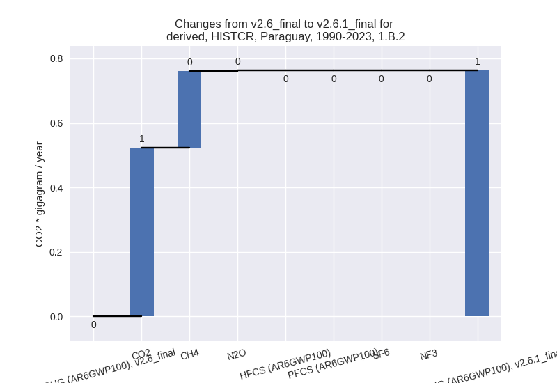
There is no subsector information available in PRIMAP-hist.
- 2: Total sectoral emissions in 2022 are 1570.61 Gg
CO2 / year which is 5.0% of M.0.EL emissions. 2023 Emissions have
changed by 23.1% (305.51 Gg CO2 /
year). 1990-2023 Emissions have changed by -15.5% (-137.07 Gg CO2 / year). For 2023
the changes per gas
are:
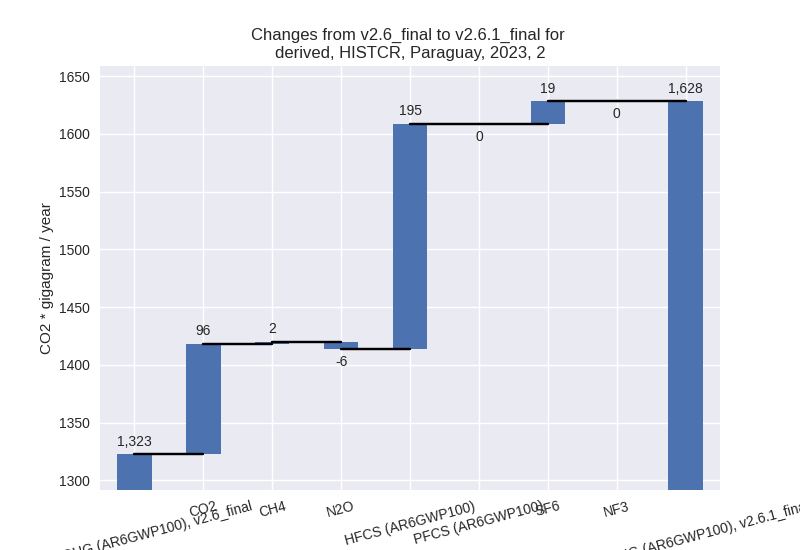
For 1990-2023 the changes per gas
are:
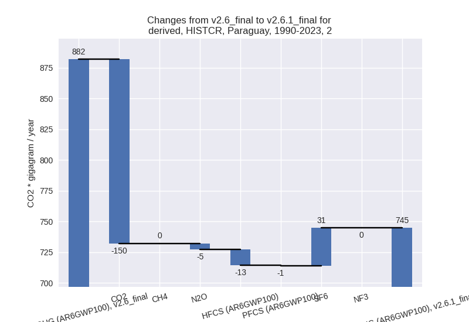
- M.AG: Total sectoral emissions in 2022 are 17408.69
Gg CO2 / year which is 55.6% of M.0.EL emissions. 2023 Emissions have
changed by -41.9% (-12497.18 Gg CO2
/ year). 1990-2023 Emissions have changed by -48.3% (-13671.82 Gg CO2 / year). For 2023
the changes per gas
are:
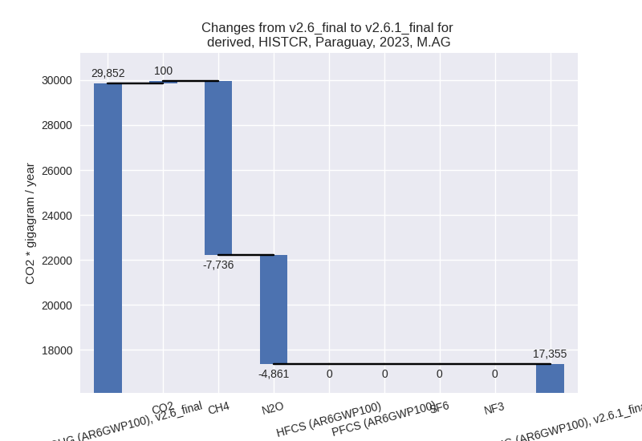
For 1990-2023 the changes per gas
are:
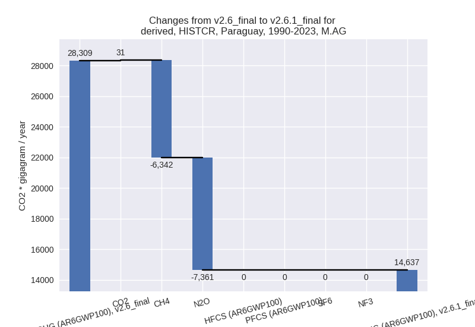
The changes come from the following subsectors:
- 3.A: Total sectoral emissions in 2022 are 14426.61
Gg CO2 / year which is 82.9% of category M.AG emissions. 2023 Emissions
have changed by -31.9% (-6741.75 Gg
CO2 / year). 1990-2023 Emissions have changed by -31.8% (-5736.06 Gg CO2 / year). For 2023
the changes per gas
are:
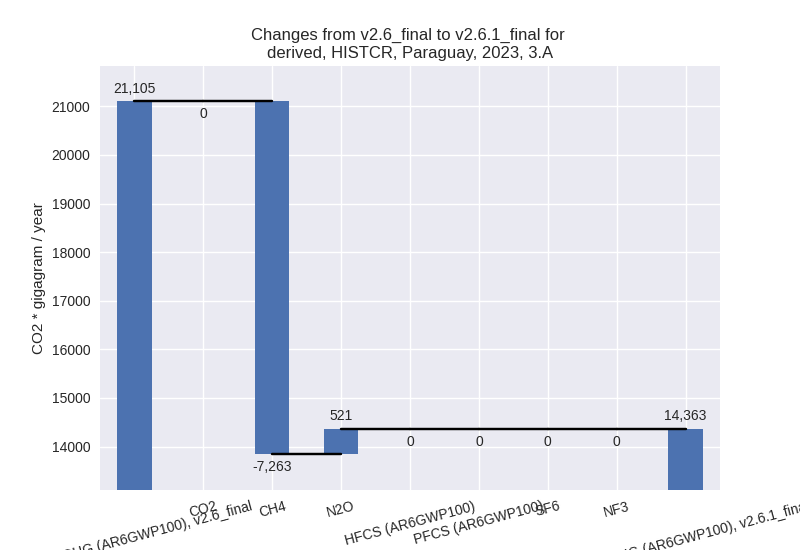
For 1990-2023 the changes per gas
are:
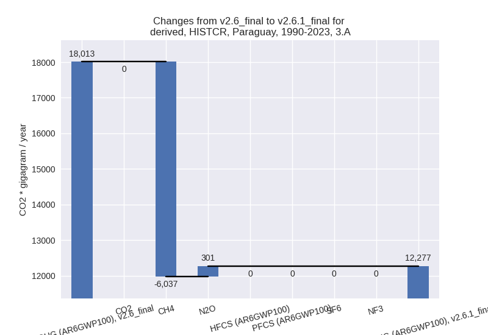
There is no subsector information available in PRIMAP-hist.
- M.AG.ELV: Total sectoral emissions in 2022 are
2982.08 Gg CO2 / year which is 17.1% of category M.AG emissions. 2023
Emissions have changed by -65.8%
(-5755.44 Gg CO2 / year). 1990-2023 Emissions have changed by -77.1% (-7935.76 Gg CO2 / year). For 2023
the changes per gas
are:
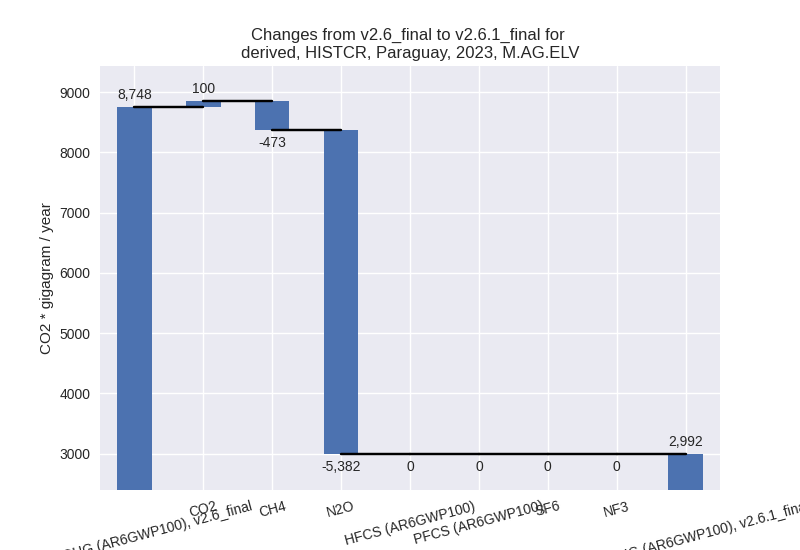
For 1990-2023 the changes per gas
are:
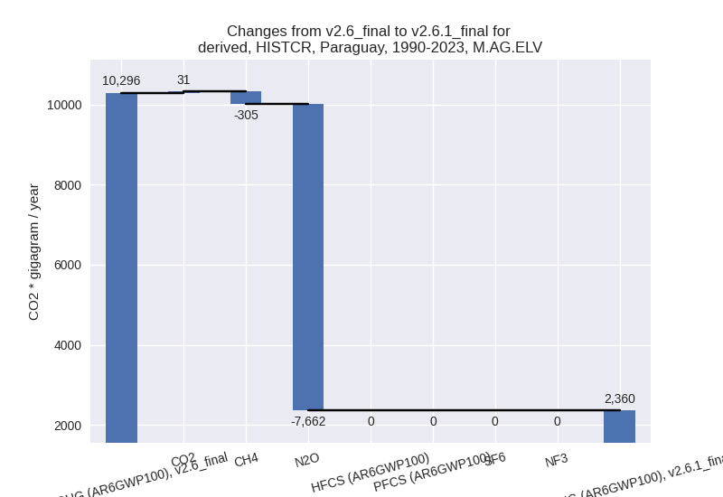
There is no subsector information available in PRIMAP-hist.
- 4: Total sectoral emissions in 2022 are 2582.23 Gg
CO2 / year which is 8.3% of M.0.EL emissions. 2023 Emissions have
changed by 46.3% (831.87 Gg CO2 /
year). 1990-2023 Emissions have changed by 13.6% (196.61 Gg CO2 / year). For 2023 the
changes per gas
are:
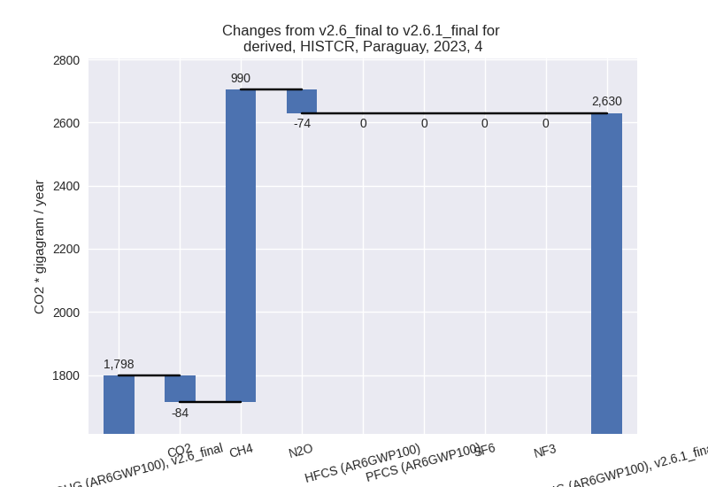
For 1990-2023 the changes per gas
are:
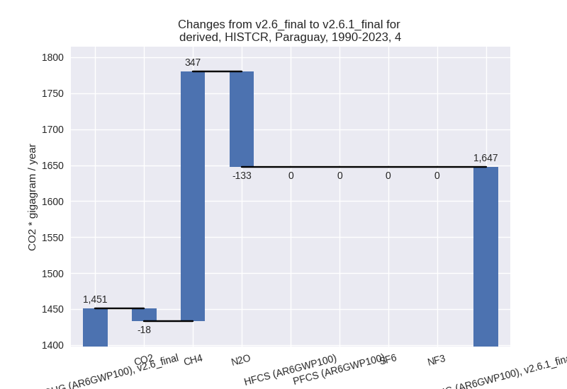
- 5: Total sectoral emissions in 2022 are 272.07 Gg
CO2 / year which is 0.9% of M.0.EL emissions. 2023 Emissions have
changed by -19.7% (-68.03 Gg CO2 /
year). 1990-2023 Emissions have changed by -1.2% (-3.15 Gg CO2 / year). For 2023 the
changes per gas
are:
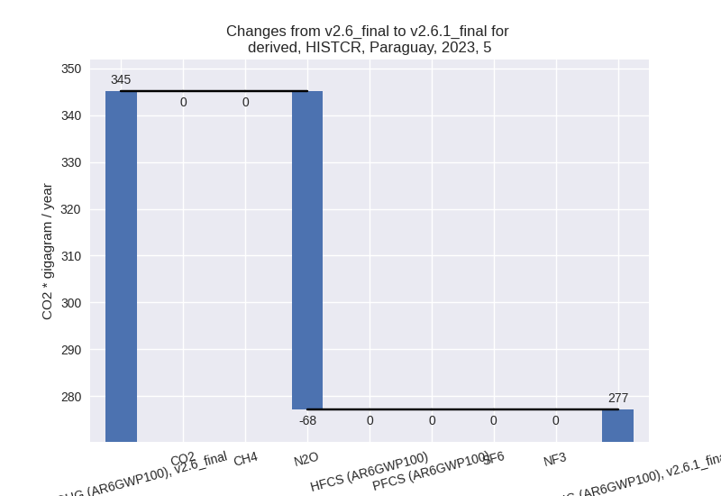
third party scenario (HISTTP):
Most important changes
per time frame
For 2023 the following sector-gas combinations have
the highest absolute impact on national total KyotoGHG (AR6GWP100)
emissions in 2023 (top 5):
- 1: M.AG.ELV, N2O with -1267.83 Gg CO2 / year (-13.6%)
- 2: 3.A, CH4 with -1016.74 Gg CO2 / year (-4.5%)
- 3: 4, CH4 with -930.19 Gg CO2 / year (-61.4%)
- 4: M.AG.ELV, CH4 with -674.66 Gg CO2 / year (-31.3%)
- 5: 1.B.1, CH4 with 123.55 Gg CO2 / year (12.0%)
For 1990-2023 the following sector-gas combinations
have the highest absolute impact on national total KyotoGHG (AR6GWP100)
emissions in 1990-2023 (top 5):
- 1: 4, CH4 with -742.45 Gg CO2 / year (-64.0%)
- 2: M.AG.ELV, N2O with -63.18 Gg CO2 / year (-0.9%)
- 3: 3.A, CH4 with -47.14 Gg CO2 / year (-0.3%)
- 4: M.AG.ELV, CH4 with -31.34 Gg CO2 / year (-2.7%)
- 5: 2, SF6 with 30.99 Gg CO2 / year (inf%)
Changes in the main sectors for aggregate KyotoGHG (AR6GWP100)
are
- 1: Total sectoral emissions in 2022 are 9212.08 Gg
CO2 / year which is 21.5% of M.0.EL emissions. 2023 Emissions have
changed by 0.9% (83.47 Gg CO2 /
year). 1990-2023 Emissions have changed by 0.1% (6.00 Gg CO2 / year).
- 2: Total sectoral emissions in 2022 are 1164.68 Gg
CO2 / year which is 2.7% of M.0.EL emissions. 2023 Emissions have
changed by 0.8% (9.68 Gg CO2 /
year). 1990-2023 Emissions have changed by 4.0% (23.44 Gg CO2 / year). For 1990-2023
the changes per gas
are:
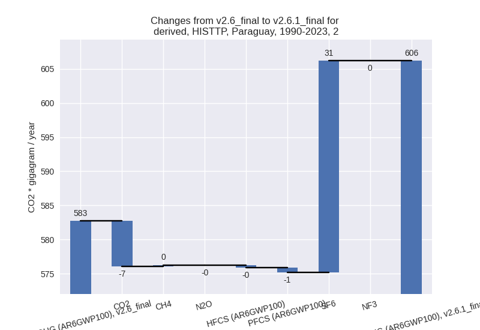
- M.AG: Total sectoral emissions in 2022 are 31618.26
Gg CO2 / year which is 73.7% of M.0.EL emissions. 2023 Emissions have
changed by -8.6% (-2957.43 Gg CO2 /
year). 1990-2023 Emissions have changed by -0.6% (-145.73 Gg CO2 / year). For 2023
the changes per gas
are:
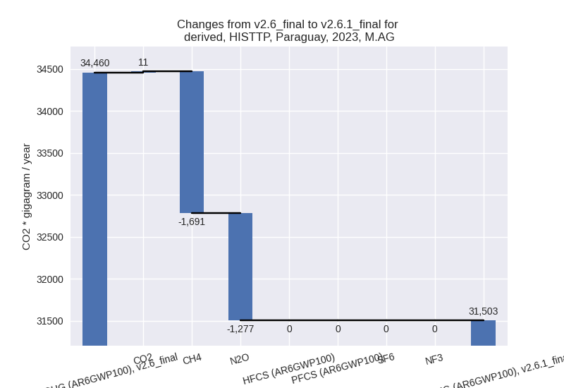
The changes come from the following subsectors:
- 3.A: Total sectoral emissions in 2022 are 21997.97
Gg CO2 / year which is 69.6% of category M.AG emissions. 2023 Emissions
have changed by -4.5% (-1025.52 Gg
CO2 / year). 1990-2023 Emissions have changed by -0.3% (-47.90 Gg CO2 / year). For 2023 the
changes per gas
are:
There is no subsector information available in PRIMAP-hist.
- M.AG.ELV: Total sectoral emissions in 2022 are
9620.29 Gg CO2 / year which is 30.4% of category M.AG emissions. 2023
Emissions have changed by -16.7%
(-1931.91 Gg CO2 / year). 1990-2023 Emissions have changed by -1.2% (-97.83 Gg CO2 / year). For 2023 the
changes per gas
are:
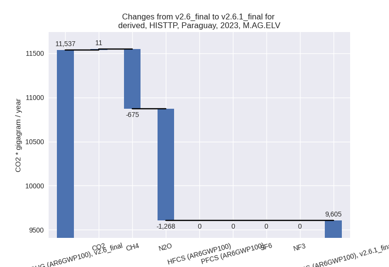
There is no subsector information available in PRIMAP-hist.
- 4: Total sectoral emissions in 2022 are 661.92 Gg
CO2 / year which is 1.5% of M.0.EL emissions. 2023 Emissions have
changed by -58.0% (-931.12 Gg CO2 /
year). 1990-2023 Emissions have changed by -60.3% (-742.54 Gg CO2 / year). For 2023
the changes per gas
are:
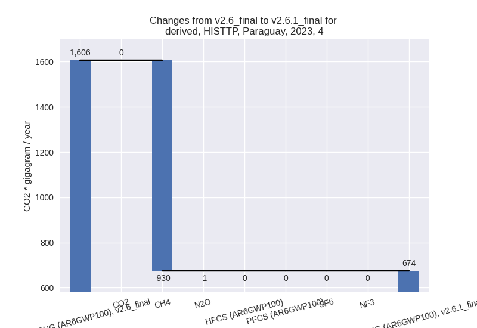
For 1990-2023 the changes per gas
are:
- 5: Total sectoral emissions in 2022 are 272.07 Gg
CO2 / year which is 0.6% of M.0.EL emissions. 2023 Emissions have
changed by -19.7% (-68.03 Gg CO2 /
year). 1990-2023 Emissions have changed by -1.2% (-3.15 Gg CO2 / year). For 2023 the
changes per gas
are: